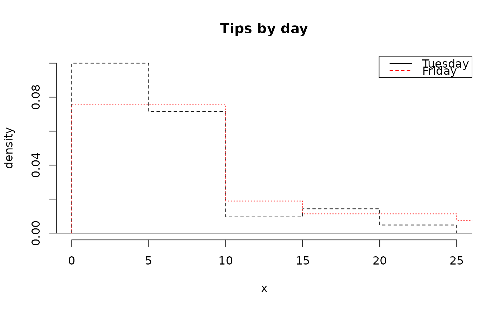
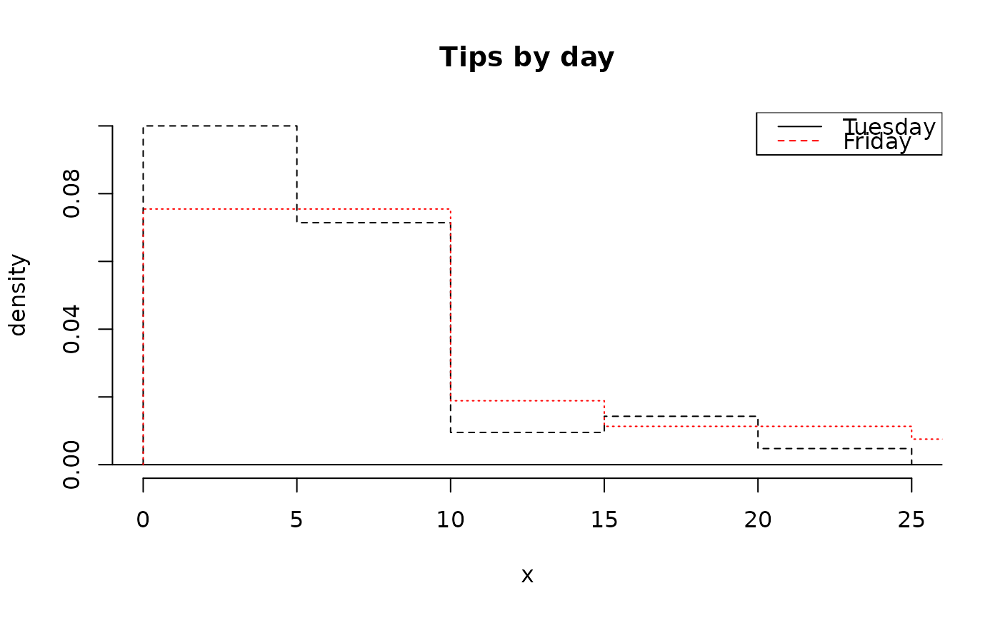

Create histograms and hollow histograms. This function permits easy color and appearance customization.
Usage
histPlot(
x,
col = fadeColor("black", "22"),
border = "black",
breaks = "default",
probability = FALSE,
hollow = FALSE,
add = FALSE,
lty = 2,
lwd = 1,
freqTable = FALSE,
right = TRUE,
axes = TRUE,
xlab = NULL,
ylab = NULL,
xlim = NULL,
ylim = NULL,
...
)Arguments
- x
Numerical vector or a frequency table (matrix) where the first column represents the observed values and the second column the frequencies. See also
freqTableargument.- col
Shading of the histogram bins.
- border
Color of histogram bin borders.
- breaks
A vector for the bin boundaries or an approximate number of bins.
- probability
If
FALSE, the frequency is plotted. IfTRUE, then a probability density.- hollow
If
TRUE, a hollow histogram will be created.- add
If
TRUE, the histogram is added to the plot.- lty
Line type. Applies only if
hollow=TRUE.- lwd
Line width. Applies only if
hollow=TRUE.- freqTable
Set to
TRUEifxis a frequency table.- right
Set to
FALSEto assign values ofxthat fall on a bin margin to the left bin. Otherwise the ties default to the right bin.- axes
If
FALSE, the axes are not plotted.- xlab
Label for the x axis.
- ylab
Label for the y axis.
- xlim
Limits for the x axis.
- ylim
Limits for the y axis.
- ...
Additional arguments to
plot. IfaddisTRUE, these arguments are ignored.
Examples
histPlot(tips$tip, main = "Tips")
 # overlaid hollow histograms
histPlot(tips$tip[tips$day == "Tuesday"],
probability = TRUE,
hollow = TRUE,
main = "Tips by day"
)
histPlot(tips$tip[tips$day == "Friday"],
probability = TRUE,
hollow = TRUE,
add = TRUE,
lty = 3,
border = "red"
)
legend("topright",
col = c("black", "red"),
lty = 1:2,
legend = c("Tuesday", "Friday")
)

# breaks and colors
histPlot(tips$tip,
col = fadeColor("yellow", "33"),
border = "darkblue",
probability = TRUE,
breaks = 30,
lwd = 3
)
# overlaid hollow histograms
histPlot(tips$tip[tips$day == "Tuesday"],
probability = TRUE,
hollow = TRUE,
main = "Tips by day"
)
histPlot(tips$tip[tips$day == "Friday"],
probability = TRUE,
hollow = TRUE,
add = TRUE,
lty = 3,
border = "red"
)
legend("topright",
col = c("black", "red"),
lty = 1:2,
legend = c("Tuesday", "Friday")
)

# breaks and colors
histPlot(tips$tip,
col = fadeColor("yellow", "33"),
border = "darkblue",
probability = TRUE,
breaks = 30,
lwd = 3
)
 # custom breaks
brks <- c(-1, 0, 1, 2, 3, 4, seq(5, 20, 5), 22, 24, 26)
histPlot(tips$tip,
probability = TRUE,
breaks = brks,
col = fadeColor("darkgoldenrod4", "33"),
xlim = c(0, 26)
)
# custom breaks
brks <- c(-1, 0, 1, 2, 3, 4, seq(5, 20, 5), 22, 24, 26)
histPlot(tips$tip,
probability = TRUE,
breaks = brks,
col = fadeColor("darkgoldenrod4", "33"),
xlim = c(0, 26)
)